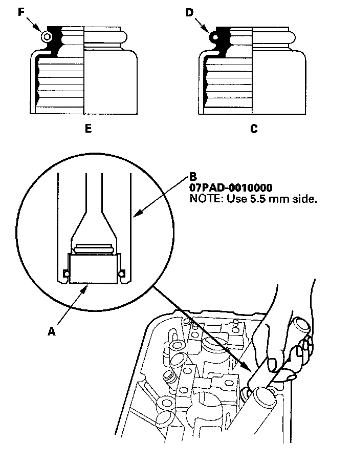
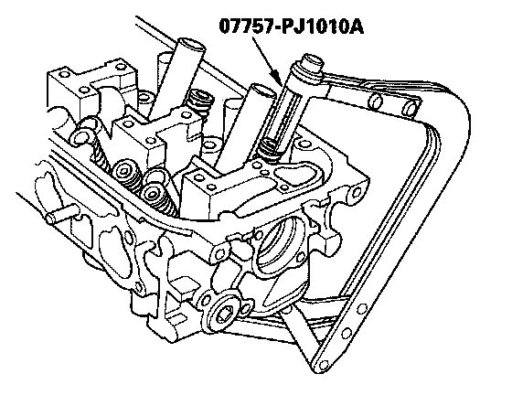
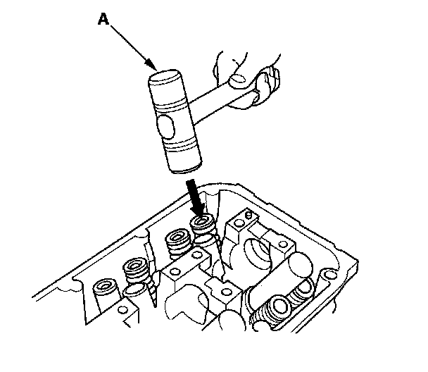

Valve, Spring, and Valve Seal Installation
Valve, Spring, and Valve Seal InstallationSpecial Tools Required
^ Stem seal driver 07PAD-0010000
^ Valve spring compressor attachment 07757-PJ1010A
1. Coat the valve stems with new engine oil. Install the valves in the valve guides.
2. Check that the valves move up and down smoothly.
3. Install the spring seats on the cylinder head.
4. Install the new valve seals (A) using the stem seal driver (B).
NOTE: Exhaust valve seals (C) have a black spring (D) and intake valve seals (E) have a white spring (F); they are not interchangeable.

5. Install the valve spring and valve retainer. Place the end of the valve spring with closely wound coils toward the cylinder head.
6. Install the valve spring compressor attachment and valve spring compressor. Compress the spring and install the valve cotters.

7. Remove the valve spring compressor and valve spring compressor attachment.
8. Lightly tap the end of each valve stem two or three times with a plastic mallet (A) to ensure proper seating of the valve and valve cotters. Tap the valve stem only along its axis so you do not bend the stem.
